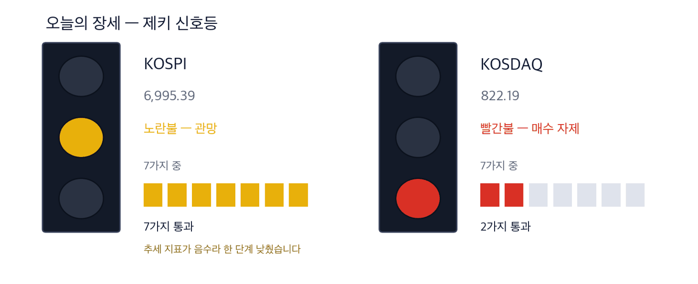
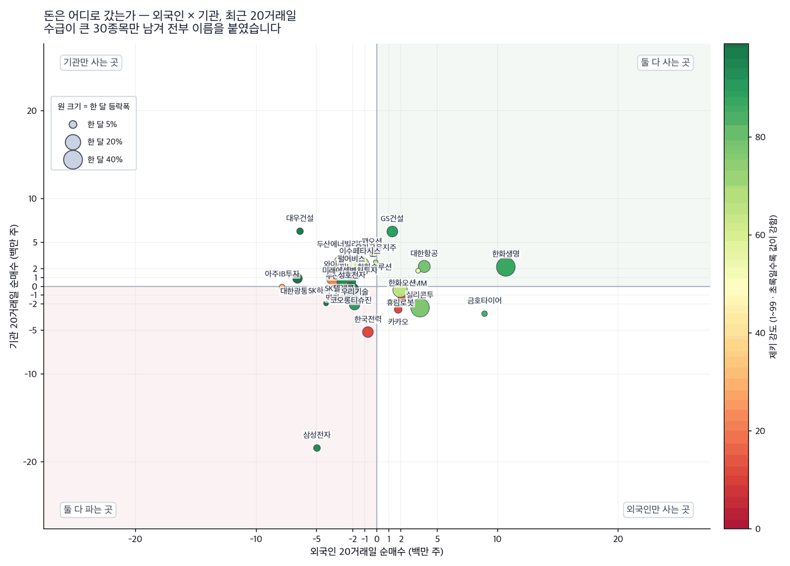
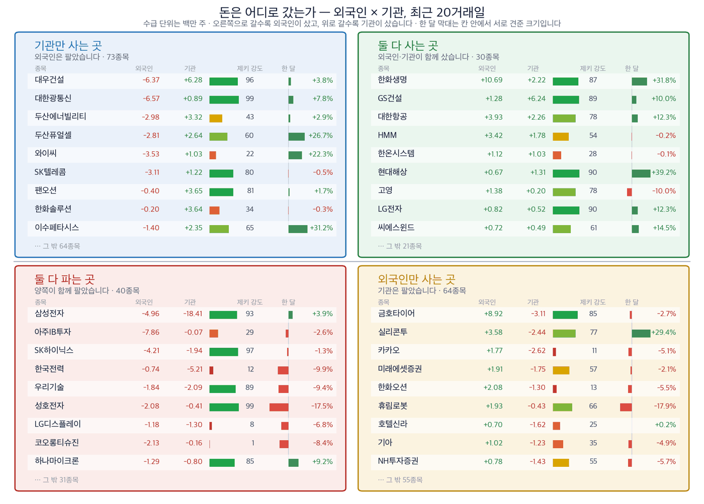

오늘 싣는 종목은 저희 보유분이 아닙니다. 기사에서 끌어낸 후보입니다.
어제 뺀 원전주가 하루 만에 올랐습니다
ZekiRex™ 신문 다이제스트 · 2026년 9월 9일 (수)
종가는 모두 9월 4일(금) 기준입니다
먼저, 이번 주 경제
오늘 지면을 관통한 한 가지
오늘 지면에 원전주가 동반 랠리했다는 기사가 실렸습니다. 어제 저희는 같은 테마를 다루면서 종목으로 만들지 않았습니다 — 이야기는 큰데 값이 따라오지 않았다는 이유였습니다.
하루 만에 값이 올랐습니다. 저희 근거가 틀렸는지 먼저 따져 보는 것이 오늘 다이제스트의 첫 일입니다. 결론부터 말씀드리면 판단은 그대로 두되 조건 하나가 달라졌습니다 — 아래에서 숫자로 보여 드립니다.
두 번째 축은 유가입니다. 중동 전운이 번지며 세 자릿수에 가까워졌다고 국제면이 전했습니다. 어제 미국판에서 정유회사만 오르고 원유를 캐는 회사는 따라오지 않았다고 적었는데, 한국에서도 같은 갈림이 보입니다.
원전주 동반 랠리 | 유가 100달러 육박 | 코스피 7천피 탈환 실패 | 엔·달러 152엔 |

이 그림 읽는 법
| 켜진 등 | 오늘의 국면입니다. 초록은 매수 우위, 노랑은 관망, 빨강은 매수 자제입니다. |
| 채워진 칸 | 7가지 조건 중 몇 개를 통과했는지입니다. 칸이 많이 찰수록 시장 구조가 튼튼합니다. |
| 칸이 다 찼는데 노랑·빨강이면 | 다른 이유로 한 단계 낮춘 것입니다. 그림 아래에 그 이유를 적었습니다. |
저희는 시장 국면을 제키 신호등으로 나눕니다. 7가지 조건 중 몇 개를 통과했는지로 정합니다. 초록불은 매수 우위, 노란불은 관망, 빨간불은 매수 자제입니다.
오늘 코스피는 노란불, 코스닥은 빨간불입니다. 아래 종목은 모두 코스피라 신규 매수가 막혀 있지는 않으나, 노란불이므로 한 종목에 크게 걸지 않습니다.
오늘 가장 확실한 것
원유값이 오르는데 정유회사가 앞서 있습니다. 에쓰오일(010950)은 한 달 +28.4%, 제키 강도 91이고 9월 4일 종가가 52주 신고가입니다. 어제 미국판에서 고른 정유 3종목과 같은 이야기이고, 두 시장에서 같은 값이 움직이고 있습니다.
화장품 제조는 어제에 이어 오늘도 가장 조건을 많이 채웁니다. 한국콜마(161890)가 네 조건을 모두 채운 유일한 종목입니다 — 한 달 +42.5%, 제키 강도 94, 외국인과 기관이 함께 사들였습니다.
원전은 오늘도 종목으로 만들지 않습니다. 값이 하루 오른 것과 흐름이 바뀐 것은 다릅니다. 두산에너빌리티는 여전히 석 달 −17.2%, 제키 강도 43이고 외국인은 20거래일 동안 298만 주를 팔았습니다. 다만 DL이앤씨(375500) 하나는 조건 3개를 채웁니다.
근거 확실 1 근거 있음 3 확인 필요 3
왜 그런가 — 기사에서 찾은 종목
저희가 들고 있지 않은 이름들입니다 — 테마 3개
제키 강도는 1에서 99까지의 값으로, 국내 상장 종목 가운데 그 주가가 상위 몇 %에 있는지를 나타냅니다. 90이면 상위 10%입니다.
외국인 20일·기관 20일은 거래소가 공시한 최근 20거래일 순매수 주식 수입니다. 저희 계산이 아니라 공시된 값이고, 종목마다 마지막 기록일이 달라 기준일을 함께 적습니다.
테마 1 — 어제 뺀 원전주가 올랐습니다. 판단이 틀렸을까요
어제 저희는 미국 내 원전 8기 이야기를 다루면서 종목으로 만들지 않았습니다. 이유는 하나였습니다 — 이야기는 큰데 값이 따라오지 않았다는 것.
오늘 지면에 원전주가 동반 랠리했다는 기사가 실렸습니다. 그러면 어제 근거가 틀린 것일까요. 저희 기준으로는 아직 아닙니다. 기준은 하루 등락이 아니라 한 달과 석 달이기 때문입니다.
두산에너빌리티는 석 달 −17.2%, 제키 강도 43, 고점 대비 −41.9%입니다. 외국인은 20거래일 동안 298만3808주를 팔았습니다. 하루 올랐다고 이 숫자들이 바뀌지 않습니다.
다만 하나는 달라졌습니다. DL이앤씨는 이 테마에서 유일하게 석 달 수익률이 플러스이고 외국인과 기관이 함께 사들이고 있습니다. 어제도 조건 셋을 채웠고 오늘도 그렇습니다.
테마 1 · 원전 — 시공
DL이앤씨 (375500)
출처: 9월 9일자 종합면·마켓면 · 시세는 저희 실측(9월 4일 종가)
| 종가 | 한 달 | 석 달 | 제키 강도 | 고점 대비 |
|---|
| 73,400원 | +3.5% | +2.1% | 86 | −28.4% |
| 누가 | 국내 대형 건설사입니다. 원전 시공 경험을 갖춘 몇 안 되는 회사에 속합니다. |
| 무엇을 | 미국 내 원전 8기 사업이 진행되면 시공 물량이 배정될 후보로 거론됩니다. 오늘 지면은 웨스팅하우스 지분 인수가 최종 관문이라고 짚었습니다. |
| 언제 | 합의문 서명은 이달 중순 예정입니다. 어제 원전주가 동반 상승했습니다. |
| 어디서 | 미국 본토입니다. 부지는 아직 정해지지 않았습니다. |
| 왜 | 이 테마에서 값이 버틴 유일한 이름이기 때문입니다. 나머지는 석 달 수익률이 모두 마이너스입니다. |
| 어떻게 | 네 조건 중 3개를 채웠습니다. 값이 올랐고(한 달 +3.5%, 석 달 +2.1%), 기관이 20거래일 62만9010주, 외국인이 5만7388주를 함께 사들였습니다(8월 28일 기준). 모자란 하나는 제키 강도 86으로 기준 90에 네 칸 못 미칩니다. |
판단 — 네 조건 중 3개 — 근거 있음. 어제와 같은 등급이고, 원전 테마가 하루 올랐다고 이 종목의 등급이 올라가지는 않습니다. 등급은 세어서 나오는 것이지 분위기로 붙이는 것이 아닙니다.
철회 기준 — 합의문에서 원전 8기 문구가 빠지거나, 기관 순매수가 5거래일 기준 매도로 돌아서면 뺍니다.
확인 신호 — 제키 강도가 90을 넘으면 네 조건을 모두 채웁니다. 9월 4일 종가 73,400원 위에서 마감이 이어지는 것이 첫 관문입니다.
테마 2 — 유가가 100달러에 닿자 정유가 앞섰습니다
국제면이 중동 전운 확산으로 유가가 100달러에 육박했다고 전했습니다. 원유값이 오르면 정유회사는 원가가 오르니 손해일 것 같습니다. 그런데 값은 반대로 갔습니다.
정유회사가 버는 돈은 원유값이 아니라 원유와 석유제품의 값 차이에서 나옵니다. 공급이 막혀 제품이 더 귀해지면 그 차이가 벌어집니다.
어제 미국판에서 같은 갈림을 봤습니다. 원유를 캐는 회사는 한 달 +3%대에 머물렀고 정제하는 회사는 +22~27%였습니다. 한국에서도 에쓰오일이 같은 자리에 있습니다.
테마 2 · 정제 — 정유
에쓰오일 (010950)
출처: 9월 9일자 국제면 · 시세는 저희 실측(9월 4일 종가)
| 종가 | 한 달 | 석 달 | 제키 강도 | 고점 대비 |
|---|
| 157,300원 | +28.4% | +39.5% | 91 | 0.0% |
| 누가 | 국내 4대 정유사 중 하나입니다. 원유를 사서 휘발유·경유로 바꿔 파는 것이 본업입니다. |
| 무엇을 | 중동 공급 차질로 석유제품이 귀해지면 정제마진이 벌어집니다. 9월 4일 종가가 52주 신고가입니다. |
| 언제 | 석 달 +39.5%로 이미 오르던 중에 이번 소식이 왔습니다. 뉴스를 보고 따라 들어간 자리가 아닙니다. |
| 어디서 | 울산 정제소이고, 제품은 국내와 수출로 나갑니다. |
| 왜 | 원유 공급이 막히면 원가도 오르지만 제품값이 더 빨리 오릅니다. 정유회사는 그 차이를 먹습니다. |
| 어떻게 | 네 조건 중 3개를 채웠습니다. 값이 올랐고(한 달 +28.4%), 제키 강도 91로 상위 9%이며, 기관이 20거래일 45만790주를 사들였습니다. 다만 외국인은 29만248주를 팔았습니다(8월 31일 기준). |
판단 — 네 조건 중 3개 — 근거 있음. 모자란 하나는 외국인 방향입니다. 다만 고점 대비 0.0%로 신고가 자리이고, 되돌림이 오면 살 자리가 아니라 기다릴 자리가 됩니다.
철회 기준 — 유가가 90달러 아래로 내려가면 정제마진 이야기의 전제가 약해집니다. 90달러는 이번 급등 이전 수준이고, 거기까지 돌아가면 이번 상승분을 대부분 반납하는 셈입니다. 또는 기관 순매수가 매도로 돌아서면 뺍니다.
확인 신호 — 외국인이 20거래일 기준 순매수로 돌아서면 네 조건을 모두 채웁니다. 9월 4일 종가 157,300원 위를 지키는 것이 첫 관문입니다.
테마 3 — 브랜드는 바뀌어도 만드는 곳은 그대로입니다
오늘 지면에 크루즈선에 올라탄 K뷰티 기사가 실렸습니다. 해외에서 팔리는 한국 화장품은 대부분 작은 브랜드인데, 그 물건을 실제로 만드는 회사는 몇 곳뿐입니다.
브랜드가 뜨고 지는 것과 상관없이 주문은 같은 공장으로 들어갑니다. 그래서 저희는 브랜드가 아니라 제조 쪽을 봅니다.
같은 지면에 에이피알 시총 3조 증발 기사도 함께 실렸습니다. 브랜드 회사이고, 해외 타격 우려가 이유로 적혔습니다. 같은 업종에서 제조와 브랜드가 갈리는 자리입니다.
테마 3 · 화장품 — 제조
한국콜마 (161890)
출처: 9월 9일자 비즈&마케팅면 · 시세는 저희 실측(9월 4일 종가)
| 종가 | 한 달 | 석 달 | 제키 강도 | 고점 대비 |
|---|
| 145,800원 | +42.5% | +74.6% | 94 | −9.8% |
| 누가 | 화장품을 브랜드 대신 개발하고 만들어 주는 회사입니다. 국내 두 곳뿐인 대형 업체 중 하나입니다. |
| 무엇을 | 한국 화장품 수출이 늘면 브랜드가 어디든 주문이 이 회사로 들어옵니다. |
| 언제 | 석 달 +74.6%, 최근 한 달 +42.5%로 오르는 속도가 붙고 있습니다. |
| 어디서 | 미국과 일본을 중심으로 한 비중국 채널입니다. |
| 왜 | 브랜드는 뜨고 지지만 제조는 바뀌지 않습니다. 오늘 지면의 에이피알 기사가 그 차이를 보여 줍니다 — 브랜드는 해외에서 흔들리는데 제조는 주문을 받습니다. |
| 어떻게 | 오늘 유일하게 네 조건을 다 채운 종목입니다. 값이 올랐고, 제키 강도 94로 상위 6%이며, 외국인이 20거래일 5만5947주, 기관이 30만6200주를 함께 사들였습니다(9월 3일 기준). |
판단 — 네 조건을 모두 — 근거 확실. 어제에 이어 이틀째입니다. 다만 이미 오른 뒤입니다. 고점 대비 −9.8%는 거의 신고가 부근이라는 뜻이고, 근거가 확실하다는 말과 지금 사기 좋다는 말은 다릅니다.
철회 기준 — 제키 강도가 85 아래로 내려가거나 기관 순매수가 5거래일 기준 매도로 돌아서면 뺍니다. 85는 저희가 상위 종목으로 보는 최저선이고, 값이 이만큼 오른 종목은 강도가 먼저 꺾입니다.
확인 신호 — 제키 강도가 94 이상을 유지하고 외국인·기관 순매수가 이어지면 근거가 그대로입니다.
버린 것 — HMM. 오늘 지면에 브라질 광산업체와 4조7000억원 장기운송계약 기사가 실렸습니다. 회사 크기에 비해 큰 숫자입니다. 그런데 값이 없습니다 — 한 달 −0.2%, 제키 강도 54입니다. 외국인과 기관이 함께 사들이고는 있으나(각각 342만·178만 주) 네 조건 중 둘만 채웁니다. 확인 필요로 남깁니다.
버린 것 — 한화오션. 태국 호위함 6800억원 수주 기사가 실렸지만 한 달 −5.5%, 석 달 −22.6%, 제키 강도 13입니다. 기관은 129만 주를 팔았습니다. 수주가 값을 되돌리지 못하고 있습니다.
근거의 무게는 네 가지를 세어 정합니다. ① 최근 한 달 주가가 올랐는가 ② 제키 강도가 90 이상인가 ③ 외국인이 20거래일 순매수인가 ④ 기관이 20거래일 순매수인가.
넷을 다 채우면 근거 확실, 셋이면 근거 있음, 둘 이하면 확인 필요입니다. 등급은 저희가 판단해서 붙이는 것이 아니라 세어서 나오는 것입니다.
| 종목 | ①값이
올랐나 | ②강도
90↑ | ③외국인
순매수 | ④기관
순매수 | 충족 | 근거의 무게 |
|---|
| 한국콜마 (161890) | O | O | O | O | 4/4 | 근거 확실 |
| 에쓰오일 (010950) | O | O | X | O | 3/4 | 근거 있음 |
| DL이앤씨 (375500) | O | X | O | O | 3/4 | 근거 있음 |
| 대한항공 (003490) | O | X | O | O | 3/4 | 근거 있음 |
| HMM (011200) | X | X | O | O | 2/4 | 확인 필요 |
| 두산에너빌리티 (034020) | O | X | X | O | 2/4 | 확인 필요 |
| 한화오션 (042660) | X | X | O | X | 1/4 | 확인 필요 |
찾아낸 종목에 자금이 따라왔는가
| 종목 | 외국인 20일 | 기관 20일 | 기준일 |
|---|
| 한국콜마 | +55,947 | +306,200 | 09월 03일 |
| 에쓰오일 | -290,248 | +450,790 | 08월 31일 |
| DL이앤씨 | +57,388 | +629,010 | 08월 28일 |
| 대한항공 | +3,926,030 | +2,261,142 | 08월 31일 |
| HMM | +3,423,933 | +1,779,980 | 08월 31일 |
| 두산에너빌리티 | -2,983,808 | +3,316,797 | 08월 31일 |
| 한화오션 | +2,084,944 | -1,297,141 | 09월 01일 |
단위는 주. 거래소 공시 값이며 종목마다 마지막 기록일이 다릅니다.
돈은 어디로 갔는가
외국인과 기관이 20거래일 동안 산 곳과 판 곳

이 그림 읽는 법
| 점 하나 | 종목 하나입니다. 가로·세로 위치가 두 값을 그대로 나타냅니다. |
| 점 크기 | 최근 한 달 등락폭입니다. 오르든 내리든 크게 움직였으면 큰 점입니다. |
| 점 색 | 제키 강도입니다. 초록일수록 주가가 시장에서 강합니다. |
| 30종목만 | 이름이 겹치면 못 읽기 때문입니다. 가운데 몰린 나머지는 움직임이 거의 없는 종목들이라 뺐습니다. |

이 그림 읽는 법
| 칸의 위치 | 오른쪽으로 갈수록 첫째 값이, 위로 갈수록 둘째 값이 큽니다. 네 칸의 이름이 그 뜻을 그대로 적고 있습니다. |
| 칸마다 9종목 | 그 칸에서 움직임이 가장 큰 순서입니다. 나머지는 칸 아래에 몇 종목인지만 적었습니다. |
| 한 달 막대 | 0을 가운데 두고 오른쪽이 상승, 왼쪽이 하락입니다. 길이는 같은 칸 안에서만 서로 견주십시오 — 칸마다 기준이 다릅니다. |
| 제키 강도 | 1~99 순위입니다. 막대가 길수록, 초록에 가까울수록 그 종목의 주가가 시장에서 강합니다. |
이 그림은 무엇을 사라는 자리가 아닙니다. 저희는 2005년까지 거슬러 올라간 자료로 이 네 칸을 되짚어 봤습니다. 어느 칸에 있었든 한 달 뒤 성적은 시장과 다르지 않았습니다.
그래서 수급만 보고 사지 않습니다. 수급은 기사와 값이 이미 맞은 종목에 돈까지 따라왔는지를 확인하는 마지막 관문으로만 씁니다. 위 표의 셋째·넷째 조건이 그것입니다.
1. 개장 직후 — 에쓰오일이 157,300원 위에서 시작하는지 봅니다. 이 값은 9월 4일 종가이자 52주 신고가입니다.
2. 오전 중 — 한국콜마가 145,800원을 지키는지 봅니다. 한 달 +42.5%의 흐름이 처음 끊기는 자리입니다.
3. 원전주 — DL이앤씨가 73,400원 위에서 마감하는지 봅니다. 어제 랠리가 하루짜리였는지 여기서 갈립니다.
4. 유가 — 위 철회 기준의 값이 선입니다. 그 아래로 내려가면 정제 이야기의 전제가 약해집니다.
5. 마감 후 — 오늘 새로 산 것이 있다면 산 값의 8% 아래에 손절을 걸어 둡니다. 저희는 예외를 두지 않습니다.
오늘 종목을 어떻게 읽으실지
처음 받으신 분을 위해
제키 강도 — 국내 상장 종목 가운데 그 주가가 상위 몇 %인지를 1~99로 나타낸 값입니다. 90이면 상위 10%입니다.
제키 신호등 — 시장 국면입니다. 7가지 중 몇 개를 통과했는지로 정합니다.
근거의 무게 — 위의 네 조건을 세어 나온 등급입니다. 근거 확실이 "지금 사라"는 뜻은 아닙니다.
철회 기준 — 무엇이 나오면 이 이야기가 틀리는지 종목마다 함께 밝혔습니다.
그래서 어떻게 하나: 오늘 네 조건을 다 채운 종목은 한국콜마 하나입니다. 셋을 채운 종목이 셋이고, 그중 에쓰오일은 외국인 방향 하나만 모자랍니다.
어제 뺀 원전은 오늘도 종목이 되지 못했습니다. 하루 오른 것과 흐름이 바뀐 것은 다르고, 저희는 뒤쪽을 봅니다.
고지 — 이 다이제스트는 투자자문이 아닙니다. 저희가 운용하는 것은 모의 포트폴리오이며 실제 매매 권유가 아닙니다. 여기 실린 종목은 저희 보유분이 아니라 기사에서 끌어낸 후보이고, 투자 판단과 그 결과는 읽는 분의 몫입니다.
종가는 모두 9월 4일(금) 기준입니다. 제키 강도는 저희가 값을 추적하는 국내 종목 안에서의 순위입니다. 외국인·기관 순매수는 거래소 공시 값이며 종목마다 마지막 기록일이 다릅니다.
기사 출처: 한국경제 9월 9일자 지면. 인용은 최소한으로 하고, 분석과 계산은 저희 것입니다.
오늘 판은 매일경제와 IBD를 읽지 못했습니다 — 예약 실행이 수집 중 멈춰 이어받았고, 개장 시각에 맞추느라 한국경제만 읽었습니다.
This is the Rex Way.